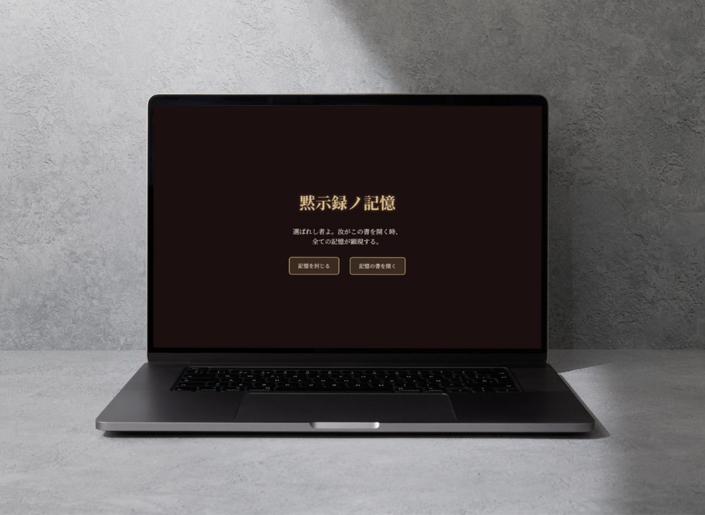
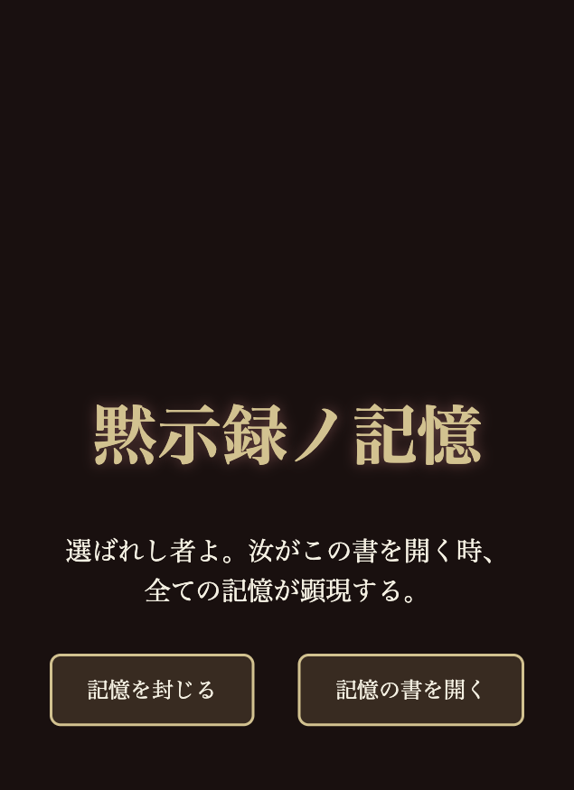
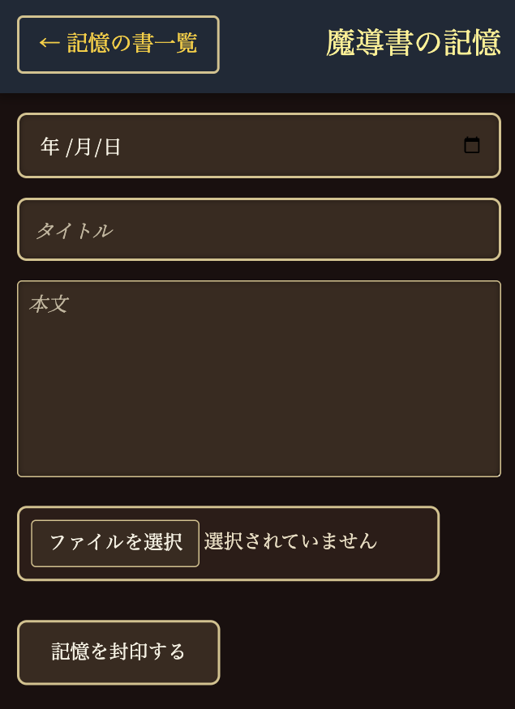
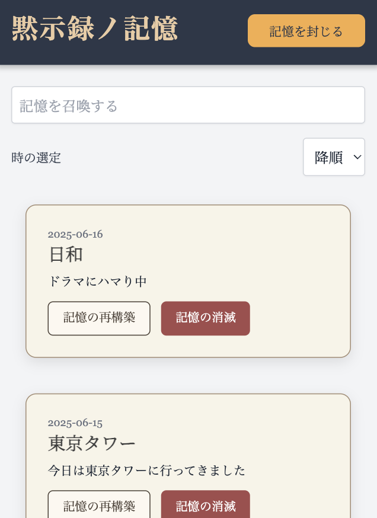

黙示録ノ記憶
（厨二病×魔導書風 日記アプリ）

概要
中二病的な言葉づかいを特徴とした、
静的でローカル保存型のパーソナル日記アプリケーションです。
ユーザーは自分だけの魔術的記録（＝日記）を綴り、
日々の記憶を「封印」して保存できます。
使用技術
HTML / CSS / JavaScript / Visual Studio Code / Canva
構成
静的サイト（ローカル保存型）
制作期間
約10日
詳細
このアプリは、日々の出来事や心の声を綴るためのWeb日記アプリケーションです。
ただ情報を記録するだけでなく、「書くこと」そのものを楽しめる体験を目指し、
中二病や魔導書の世界観を取り入れたデザインで制作しました。
自分だけの感性や世界観を大切にする若者を主なターゲットとしています。
デザインは、魔導書をモチーフに黒・金・紺を基調とした配色を採用。
操作文も「記憶を封じる（登録）」「記憶の再構築（編集）」「記憶の消滅（削除）」
といった独自の表現で統一し、没入感を高めています。
機能面では、JavaScriptを用いて検索や並び替え、削除確認などの機能を実装。
検索ではリアルタイムで結果が反映されるため、スムーズな操作が可能です。
また、モバイル表示にも対応しており、タップ操作や視認性にも配慮したUI設計を行いました。
制作過程では、画面サイズごとのレイアウト崩れを何度も調整し、安定した表示を実現しました。
今後の展望
- 合言葉を入力するとデザインが切り替わる演出
（通常の日記から魔導書風デザインへ変化） - ログイン機能の実装によるユーザーごとの日記管理
→表側は誰でも見られる「一般の日記」
→裏側はログインユーザーだけがアクセスできる「魔導書風の日記」 - ボタン押下時に魔法陣が展開するアニメーションなど、
世界観をより強調する演出 - データの永続化に向けたバックエンドとの連携
イメージ図
↑トップ画面
↑登録画面
↑一覧画面